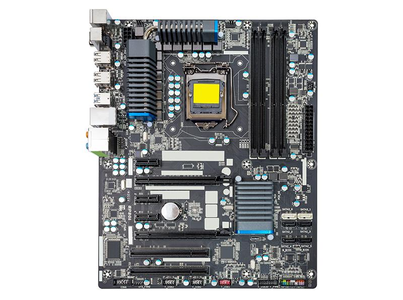
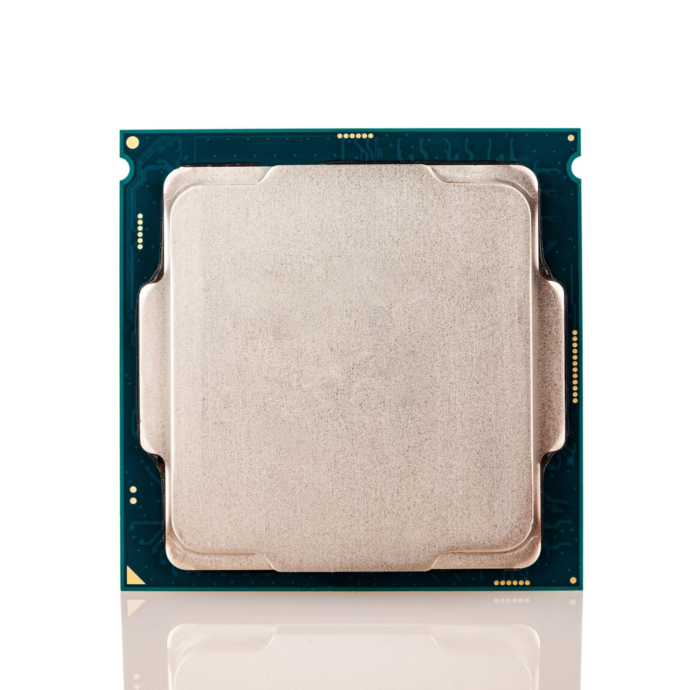
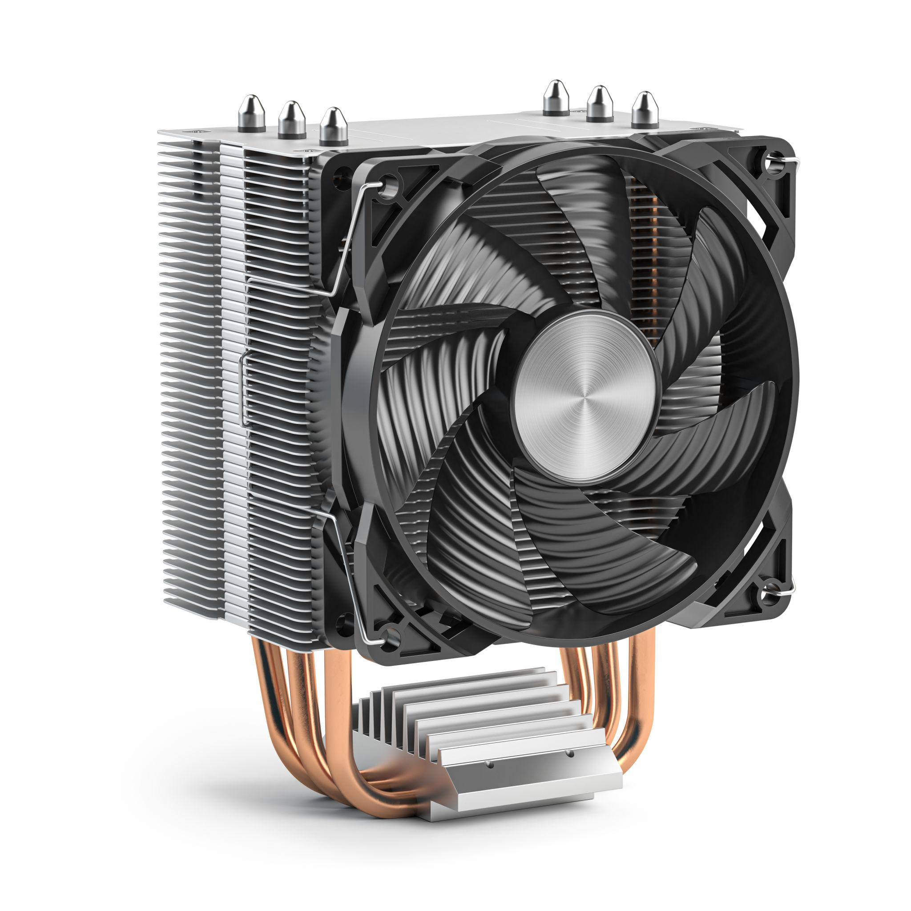
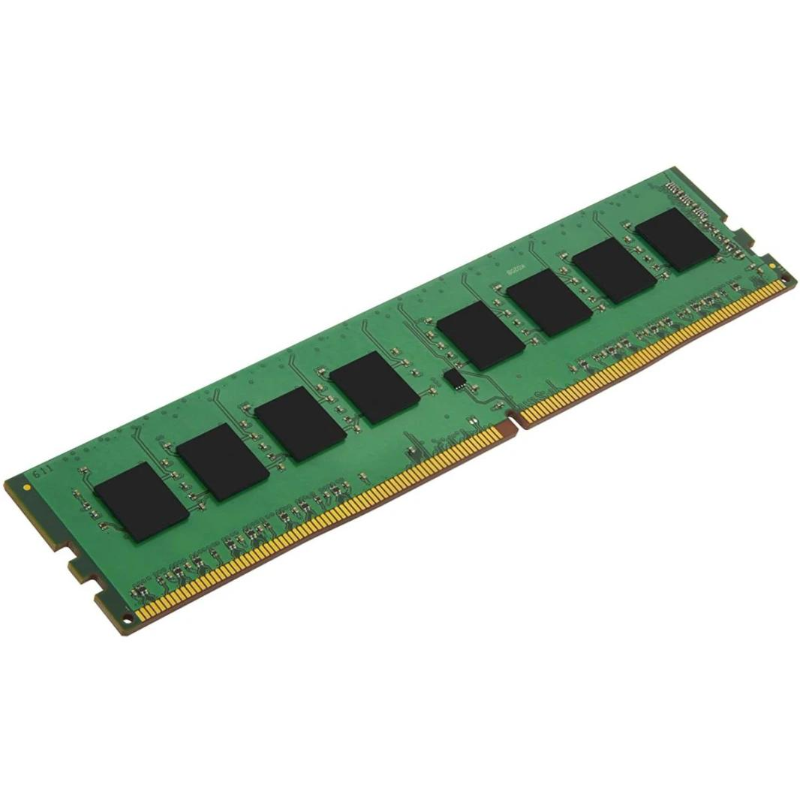
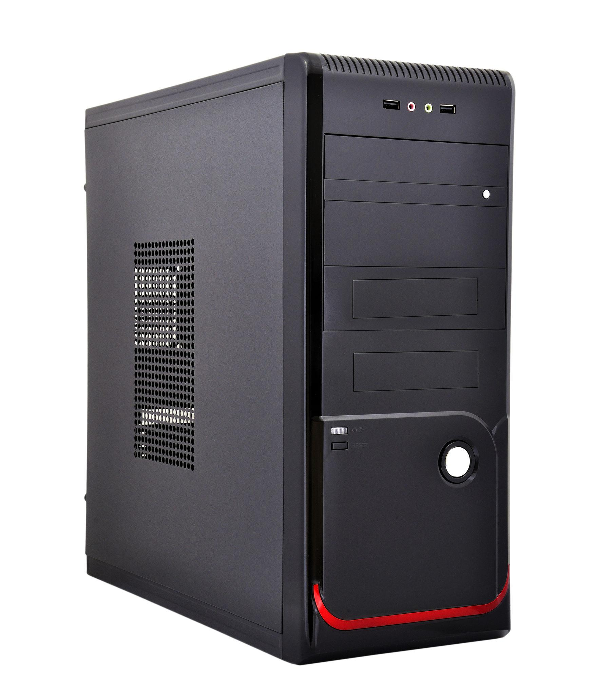
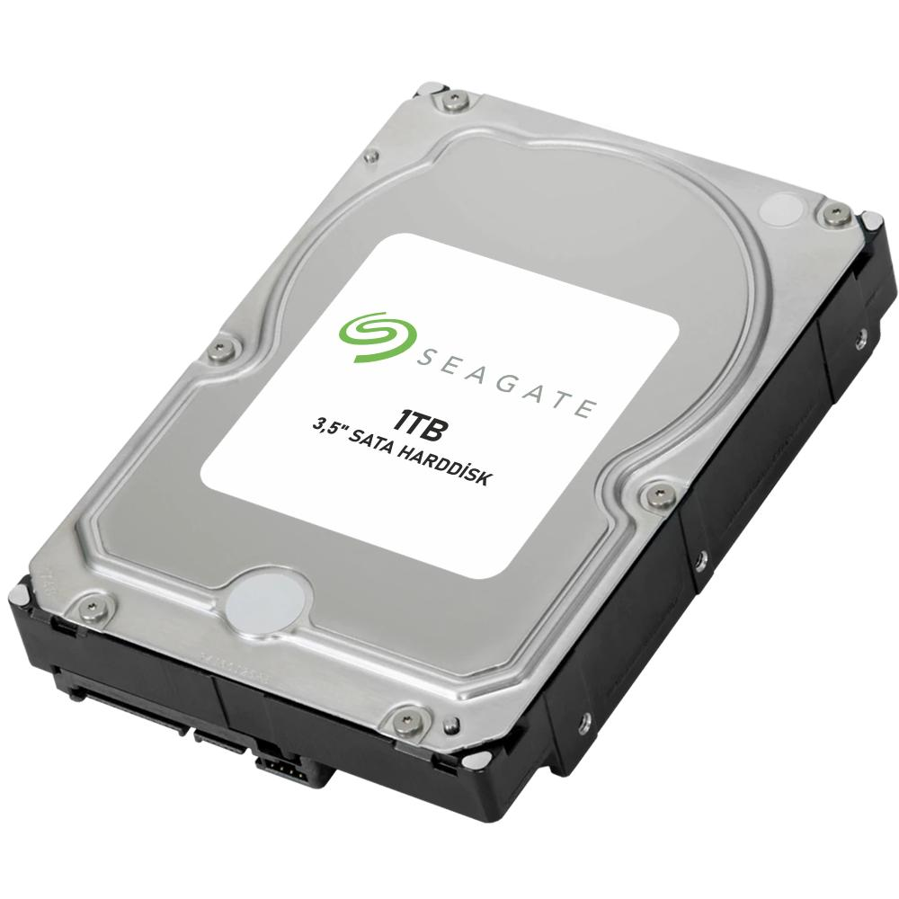

3. Penjelasan Langkah-Langkah Prosedur PC
Pelajari langkah-langkah kerja teknis pembongkaran dan perakitan komputer secara runtut, terstruktur, dan terstandarisasi berdasarkan dokumen prosedur resmi.

Menyiapkan Motherboard
Persiapan AwalSiapkan motherboard sebagai tempat pemasangan processor, RAM, dan perangkat lainnya. Pastikan motherboard diletakkan di tempat yang aman, datar, bersih, dan beralaskan bantalan antistatis agar sirkuit terhindar dari kontak konduktif atau goresan meja kerja.

Memasang Processor
Pemasangan IntiBuka tuas pengunci socket yang tersedia di motherboard. Pasangkan processor dengan mencocokkan tanda segitiga emas pada sudut processor dengan tanda pada socket. Letakkan processor secara pas tanpa memaksakan posisi, lalu tutup penutup socket dan kunci kembali tuas penguncinya.

Mengoleskan Thermal Paste
Termal & PendinginSetelah processor terpasang kuat, berikan thermal paste pada bagian atas pelindung logam processor secukupnya dan secara merata. Thermal paste berfungsi mengisi pori-pori mikroskopis udara untuk membantu menghantarkan panas dari processor menuju heatsink.

Memasang Heatsink & Fan
Termal & PendinginPasangkan heatsink di atas processor. Perhatikan posisi kaki-kaki atau pin penguncinya, tekan secara menyilang hingga terpasang kokoh. Setelah itu, sambungkan kabel daya kipas heatsink ke konektor bertuliskan CPU_FAN pada motherboard.

Memasang RAM
Memori UtamaBuka pengait klip pada kedua sisi slot RAM motherboard. Sesuaikan coakan (notch) pada bagian bawah modul RAM dengan pembatas slot agar orientasinya tepat. Tekan kedua ujung RAM secara perlahan dan seimbang sampai pengunci samping menutup otomatis dan berbunyi "klik".

Memasang Motherboard ke Casing
Integrasi CasingPasang pelat I/O Shield pada bagian belakang casing, lalu masukkan motherboard ke dalam casing secara hati-hati. Sesuaikan posisi lubang baut motherboard dengan dudukan spacer (standoff) casing, kemudian kencangkan menggunakan baut pengunci secara merata.

Memasang Kabel Front Panel dan CMOS
Konektor KontrolHubungkan kumpulan kabel kecil front panel dari casing (Power SW, Reset SW, HDD LED, Power LED) ke pin header motherboard. Perhatikan tulisan pada konektor dan petunjuk diagram motherboard agar pemasangan tidak tertukar. Pastikan pula baterai CMOS tipe CR2032 terpasang rapat pada dudukannya.

Memasang DVD-ROM
Drive OptikBuka penutup kompartemen 5.25 inci di bagian depan casing. Masukkan unit DVD-ROM dari bagian luar depan casing, dorong perlahan ke dalam, sejajarkan posisinya dengan lubang baut pada rangka casing, kemudian kencangkan menggunakan baut pada kedua sisi.

Memasang Harddisk (HDD / SSD)
Media PenyimpananMasukkan harddisk ke dalam rak kompartemen penyimpanan (drive bay 3.5" atau 2.5") yang tersedia di dalam casing. Sejajarkan lubang baut sampingnya dan kencangkan menggunakan baut pengunci agar harddisk kokoh dan tidak bergetar saat piringan disk berputar.

Memasang LAN Card
Kartu JaringanLepaskan pelat penutup slot ekspansi di bagian belakang casing. Masukkan LAN Card ke slot ekspansi motherboard yang sesuai (slot PCI atau PCIe x1). Perhatikan posisi coakan konektornya, tekan lurus hingga masuk sempurna, kemudian kencangkan bracket logamnya dengan baut pada casing.

Memasang VGA Card (Graphics Card)
Kartu GrafisBuka kait pengunci pada slot PCI Express (PCIe) x16 di motherboard. Pasangkan VGA Card secara tegak lurus, tekan merata hingga kait slot mengunci otomatis, lalu kencangkan baut pengunci bracket VGA pada rangka belakang casing agar stabil menahan beban kartu grafis.

Memasang Kabel SATA Data
Jalur DataHubungkan satu ujung kabel SATA data ke port SATA pada motherboard, dan ujung lainnya ke port SATA pada Harddisk serta DVD-ROM. Kabel pipih ini bertugas mentransfer aliran data bolak-balik antara media penyimpanan dan sistem komputer.

Memasang Power Supply & Kabel Daya
Catu Daya AkhirMasukkan unit Power Supply ke kompartemen dudukan di bagian dalam casing. Kencangkan keempat baut penahannya di bagian luar belakang casing. Setelah itu, distribusikan kabel-kabel dayanya: kabel 24-pin ATX ke motherboard, kabel 4/8-pin ke CPU power, kabel SATA power ke harddisk dan DVD-ROM, serta kabel PCIe power ke kartu grafis (jika diperlukan).
Mematikan Komputer & Memutus Listrik
Keselamatan UtamaMatikan komputer secara benar melalui sistem operasi (Shut Down). Setelah sistem padam total, matikan sakelar belakang PSU dan cabut kabel listrik utama dari stopkontak PLN. Tekan tombol Power casing sejenak untuk membuang sisa arus listrik statis yang masih tersimpan di motherboard.
Membuka Casing Komputer
Akses InternalLepaskan baut pengunci pada panel samping casing menggunakan obeng plus (+). Geser penutup panel ke arah belakang, lalu angkat penutup casing dan simpan di tempat yang aman agar tidak tergores.
Melepas Kabel Power Supply
Pemutusan DayaLepaskan seluruh kabel yang menghubungkan power supply dengan komponen: cabut konektor 24-pin ATX motherboard dengan menekan klip penguncinya, cabut konektor daya 4/8-pin CPU, konektor daya SATA pada Harddisk dan DVD-ROM, serta kabel daya VGA.
Melepas VGA Card (Graphics Card)
Kartu EkspansiBuka baut pengunci bracket VGA Card pada rangka belakang casing. Tekan ke bawah kait pengunci di ujung slot PCI Express x16 pada motherboard, kemudian angkat kartu VGA secara perlahan dan tegak lurus keluar dari slotnya.
Melepas LAN Card
Kartu JaringanLepaskan baut pengunci bracket LAN Card pada casing. Pegang bagian tepi atas kartu jaringan, lalu tarik keluar dari slot ekspansi motherboard secara hati-hati.
Melepas Kabel SATA Data
Kabel DataLepaskan kabel SATA data yang terhubung ke harddisk, DVD-ROM, dan motherboard. Tekan klip pengunci logam kecil pada kepala konektor kabel SATA sebelum menariknya agar port tidak rusak.
Melepas Harddisk (HDD)
PenyimpananBuka seluruh baut pengunci harddisk pada kedua sisi rak penyimpanan (drive bay) casing menggunakan obeng plus (+). Pegang harddisk dengan hati-hati, lalu keluarkan perlahan dari tempat dudukannya.
Melepas DVD-ROM
Drive OptikLepaskan baut pengunci drive DVD-ROM di kedua sisi rangka dalam casing. Dorong unit DVD-ROM ke arah luar melalui bagian depan casing, lalu keluarkan dengan aman.
Melepas RAM
Modul MemoriTekan ke bawah pengait klip pada kedua ujung sisi slot RAM secara bersamaan sampai modul RAM terangkat ke atas. Ambil RAM dengan memegang bagian kedua tepi sampingnya, hindari menyentuh deretan pin kuningan emasnya.
Melepas Heatsink & Fan
Unit PendinginCabut konektor kabel kipas dari port CPU_FAN motherboard. Buka kunci pengait atau putar pin pengunci heatsink, lalu angkat unit heatsink perlahan dari atas processor. Jika pasta menempel rekat, putar heatsink ke kiri-kanan secara lembut sebelum mengangkatnya.
Melepas Processor (CPU)
Unit PemrosesBuka tuas pengunci socket processor ke posisi tegak, buka penutup socket, lalu angkat processor dengan memegang kedua tepinya secara sangat hati-hati. Simpan processor pada wadah khusus antistatis agar pin atau permukaan kontak emasnya terlindungi.
Melepas Motherboard dari Casing
Papan SirkuitCabut kabel front panel (Power, Reset, LED) dan kabel audio/USB casing dari motherboard. Buka seluruh baut pengunci motherboard dari dudukan spacer casing, kemudian keluarkan motherboard secara hati-hati dari dalam casing.
Melepas Power Supply (PSU)
Unit Catu DayaTahan kotak power supply dengan satu tangan agar tidak merosot, lalu buka keempat baut pengunci power supply di bagian belakang casing. Keluarkan unit power supply dari casing secara perlahan.